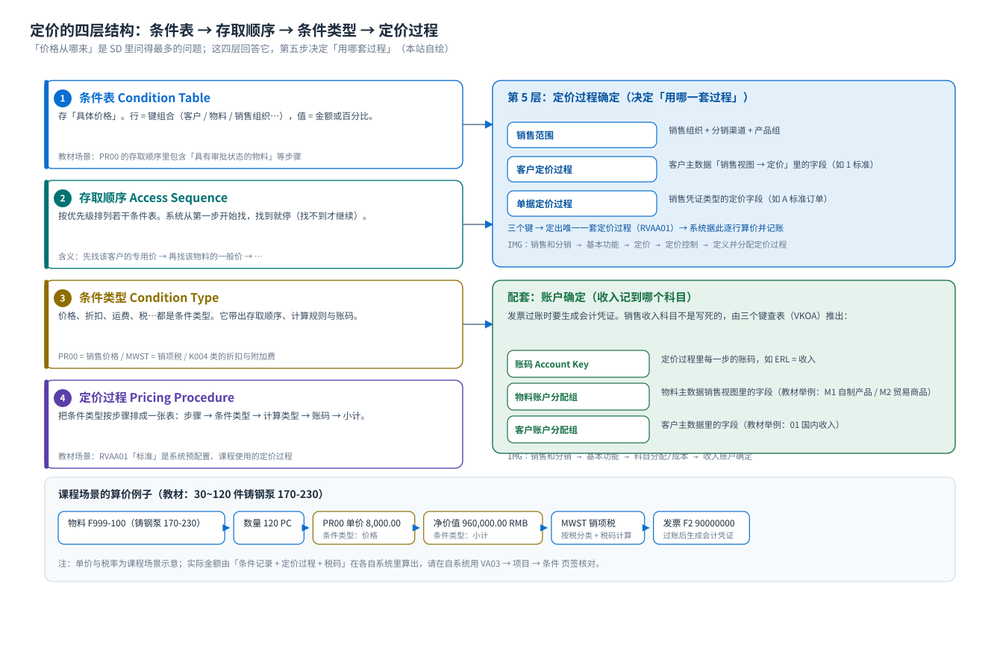

定价：条件技术的四层结构
条件表 · 存取顺序 · 条件类型 · 定价过程 · 定价过程确定 · 账户确定
1. 一句话
价格是「查」出来的，不是「输」进去的
录单时你没有输价格，但订单里有价格——系统按配置好的顺序去条件记录里查。搞清「谁去查、按什么顺序查、查到的是哪一行」，定价问题就都能定位。
2. 定价的四层结构（结构图）
{kind=link}

2. 四个概念，一张图看懂
| 层 | 是什么 | 教材里对应的东西 | 打个比方 |
|---|---|---|---|
| 条件表 Condition Table | 一张存放价格的表，字段是「查价用的键」 | PR00 的存取顺序里包含「具有审批状态的物料」等步骤 | Excel 的价格表（客户 + 物料 → 价格） |
| 存取顺序 Access Sequence | 按优先级排好的若干条件表 | PR00 的存取顺序：先找谁的价，找不到再找谁的 | 查资料的顺序：先查专用台账，没有再查总表 |
| 条件类型 Condition Type | 一类价格/折扣/税，带计算规则与账码 | PR00 销售价格 / MWST 销项税 | 价格的「类别」：单价、折扣、运费、税 |
| 定价过程 Pricing Procedure | 把条件类型按步骤排成一张表，含计算类型与小计 | 教材用系统预配置的 RVAA01「标准」 | 算价单：第 10 步单价、20 步折扣、30 步税… |
关键细节：定价过程里的「账码」定价过程的每一步除了条件类型，还有一个账码（Account Key），比如
ERL 表示收入。发票过账时，系统就是靠「账码 + 物料账户分配组 + 客户账户分配组」去查收入科目的。所以定价过程不只管算价，还管记账。IMG 路径（定义并分配定价过程 / 客户与单据定价过程）销售和分销 → 基本功能 → 定价 → 定价控制 → 定义并分配定价过程


3. 定价过程确定：决定「用哪套过程」
系统不会凭感觉挑过程，它用三个键查一张表（IMG：定义并分配定价过程 → 定价过程确定）：
| 决定键 | 来自哪里 | 教材场景 |
|---|---|---|
| 销售范围 | 销售组织 + 分销渠道 + 产品组 | 共 4 个销售范围，可分别指定 |
| 客户定价过程 Customer Pricing Procedure | 客户主数据 → 销售视图 → 定价 | 教材使用标准值 |
| 单据定价过程 Document Pricing Procedure | 销售凭证类型的定价字段 | 订单类型 OR 对应的值 |
排错思路价格不对先看三件事：① 订单抬头/项目的销售范围对不对；② 客户的「客户定价过程」字段有没有值；③ 单据类型的「单据定价过程」有没有值。三者组合查不到过程，价格就会是空的或提示不完整。
4. 税与账户确定
| 要做的事 | 对象的配置 | 教材任务 |
|---|---|---|
| 定义税收确定规则 | IMG：销售和分销 → 基本功能 → 税收 → 定义税收确定规则 | 任务 27 |
| 定义客户税分类与物料税分类 | IMG：销售和分销 → 基本功能 → 税收 → 定义主记录数据相关性 | 任务 28 |
| 维护销项税税率 | VK11 → 条件类型 MWST | 任务 36 |
| 定义物料账户分配组 | IMG：销售和分销 → 基本功能 → 科目分配/成本 → 收入账户确定 → 检查科目分配的相关主数据（教材示例 M1 自制产品 / M2 贸易商品） | 任务 29 |
| 维护销售收入的总帐科目 | IMG：… → 收入账户确定 → 分配总帐科目 | 任务 30 |
教材里的思路很清晰：只按物料区分收入科目（自制产品 / 贸易商品两类），客户账户分配组虽然也参与确定，但在该场景里不起作用。这是理解「账户确定」的最小例子：先决定「用哪几个键」，再决定「键的取值组合 → 科目」。

5. 算价过程走一遍（课程场景）
| 步骤 | 系统做什么 | 看哪里 |
|---|---|---|
| ① 输入物料 + 数量 | 带出销售单位、项目类别、工厂 | 订单项目行 |
| ② 确定定价过程 | 销售范围 + 客户定价过程 + 单据定价过程 → RVAA01 | IMG 定价过程确定 |
| ③ 逐行取条件 | 按定价过程步骤，每个条件类型按存取顺序查条件记录 | 项目 → 条件页签 |
| ④ 计算净价值 | 单价 × 数量 − 折扣 + 附加费 = 净价值 | 条件页签的小计行 |
| ⑤ 算税 | 客户税分类 + 物料税分类 → 税码 → 销项税 | 条件页签 MWST 行 |
| ⑥ 保存后可追踪 | 价格写进订单，之后可查、可重定价 | VA03 / VA05 |
课程场景的数值（来自教材画面）教材的报价/订单场景是「30 件铸钢泵 170-230」，后续交货与发票画面显示 120 PC、净价值 960,000.00 RMB、发票
F2 90000000、出具发票日期 2021.04.15、付款方 10000000；VK11 里 PR00 的条件记录是 8,000.00 RMB／PC、有效期 2021.01.01 – 9999.04.14。这些是教材环境的实际数值，不是标准值——你的系统里单价与税率一定不同，重点是理解「数值怎么被算出来」（8,000 × 120 = 960,000）。6. 定价排错清单（按概率排序）
- 没有价格行：条件记录不存在 / 已过期 / 键不匹配（销售范围、客户、物料不一致）。先去
VK13按条件类型查一下有没有记录。 - 价格行在，但金额不对：存取顺序里找到了另一条记录（比如客户专用价优先于一般价）。在
VA03条件页签看该行的「来源」与「条件记录号」。 - 改了条件记录，老单据没变：单据是快照。要生效需在单据里手动重新定价或新建单据。
- 税为 0：客户税分类或物料税分类缺失/不匹配，或
MWST条件记录缺失。 - 提示定价类型不完整：定价过程缺少某个标记为「必填」的条件类型（如税分类未维护会产生不完整性提示）。
7. 自检
| 要确认的事 | 怎么确认 |
|---|---|
| 这套订单用了哪个定价过程 | VA03 → 抬头 → 条件/定价 相关字段；或 V/08 看确定表 |
| 某个条件类型的存取顺序 | 后台：销售和分销 → 基本功能 → 定价 → 条件类型 → 定义条件类型（双击存取顺序） |
| 条件记录明细 | VK13 输入条件类型与键；表 KONP（条件金额）/ KONH（条件抬头） |
| 订单里实际用的条件值 | VA03 → 项目 → 条件页签；表 KONV（单据条件） |